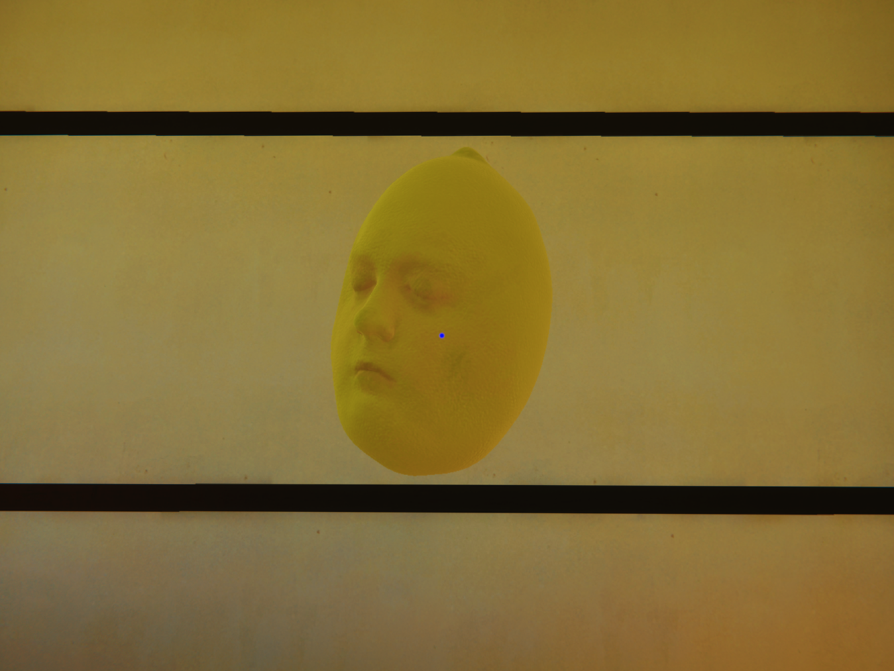
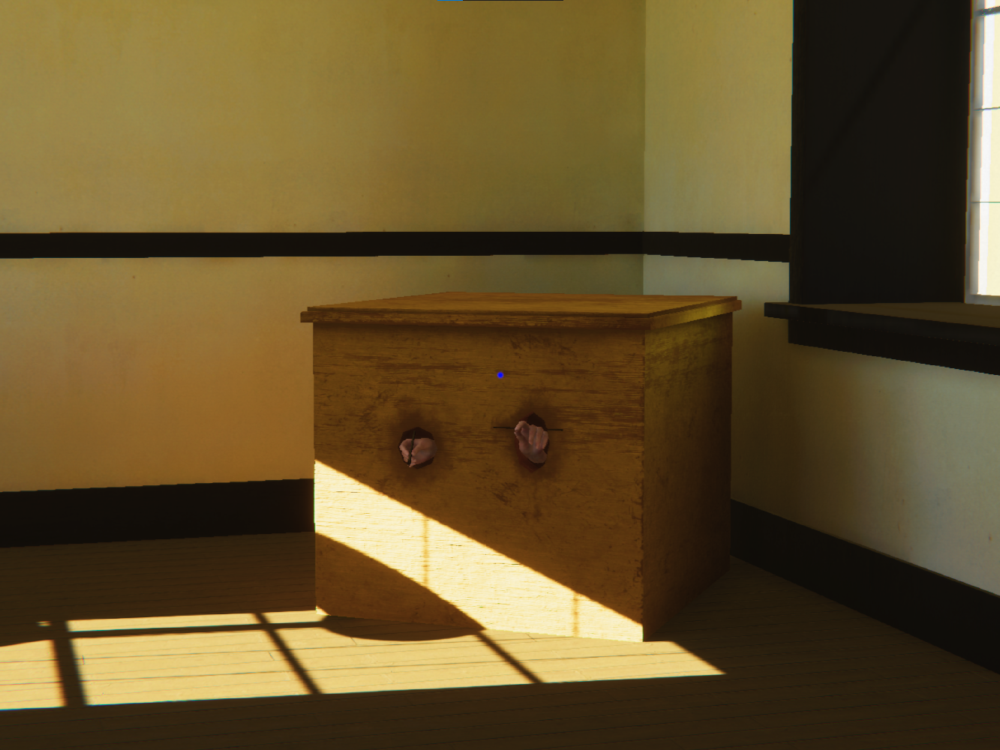
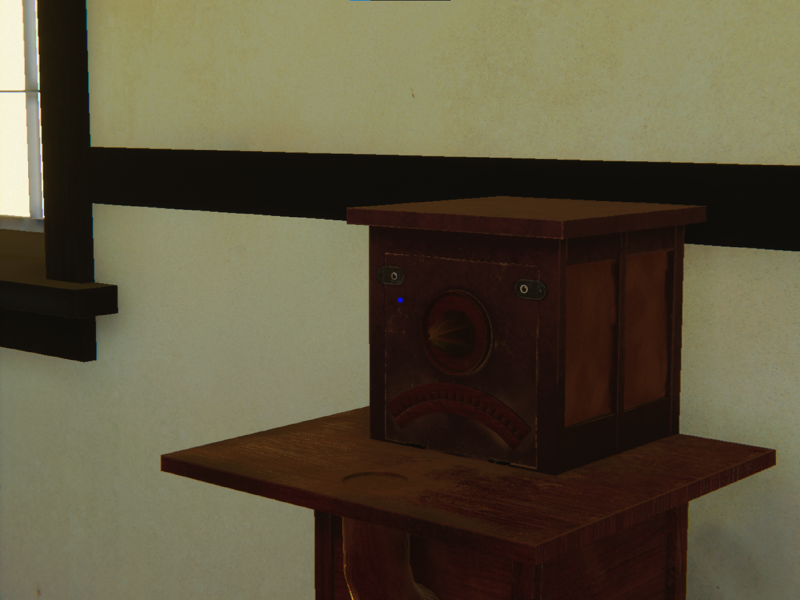
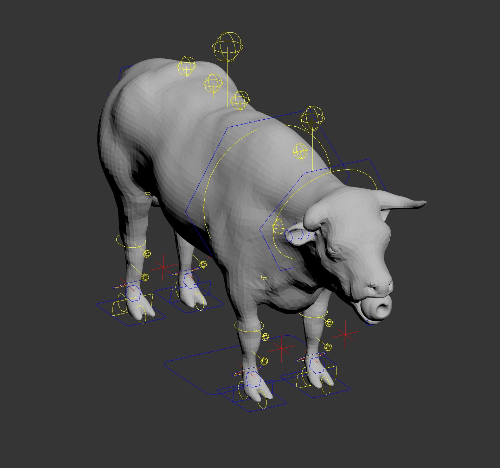

2019-2021
experimental videogame about making a face
documentation below, download/more info here using: 3ds Max, Unity, Photoshop, Illustrator, Zbrush, Substance Painter
full playthrough:
screenshots and models:




pistachio bridge
2019
a physical game about pistachios, drawings and dying
documentation below, download instructions here
two children spin on the blades of a blender
(we know no harm will come of this),
a rice cooker filled with aggression
(possibly so-called-male),
two cardboard cut-outs in a toaster
(of me and you?)


 screen shot:
screen shot: